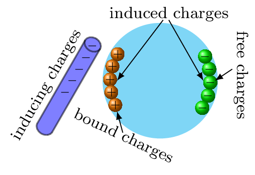

Section 1.2 Examples A
Convert
- \(1^{o}\) (degree)
- \(1'\) (arc minute) and
-
\(1"\) (arc second)in radians. Use \(180^{o} = \pi\) rad, \(1^{o} =60'\) and \(1' = 60"\text{.}\)
Solution.
- We have \(180^{o} = \pi\) rad\begin{equation*} \therefore 1^{o} = \frac{\pi}{180}\quad rad = 1.745\times 10^{-2} \quad rad. \end{equation*}
- \(1^{o} = 60' = 1.745\times 10^{-2} \) rad\begin{equation*} \therefore 1' = 2.908\times 10^{-4} \quad rad = 2.91\times 10^{-4}\quad rad. \end{equation*}
- \(1' = 60'' = 2.908\times 10^{-4} \) rad\begin{equation*} \therefore 1'' = 4.847\times 10^{-4} \quad rad = 4.85\times 10^{-6} \quad rad. \end{equation*}
Example 1.2.2.
Calculate the diameter of the Sun if Sun's angular diameter is \(1920'\) and the distance D of the Sun from the Earth is \(1.496 \times 10^{11}\) m.
Solution.
Figure 1.2.3.
Sun's angular diameter, \(\alpha = 1920'' = 1920\times 4.85 \times 10^{-6}\) rad \(= 9.31 \times 10^{-3}\) rad.
Now if the planet is very far away then \(\frac{d}{D}\leq \leq 1 \) and angle \(\alpha \) is very small. Hence, we can take a diameter \(d\) as an arc length of a circle centered at point \(O\text{.}\) Therefore by using radian formula, we have -
\begin{equation*}
\text{Sun's diameter}, \quad d = \alpha D
\end{equation*}
\begin{equation*}
=(9.31 \times 10^{-3} rad) \times (1.496 \times 10^{11} m)
\end{equation*}
\begin{equation*}
= 1.39\times 10^{9} m \quad \text{ [by replacing rad =1]}
\end{equation*}
Example 1.2.4.
The moon is observed from two diametrically opposite points A and B on Earth. The angle \(\alpha\) subtended at the moon by the two directions of observation is \(1^{o}54'\text{.}\) Given the diameter of the Earth to be about \(1.276 \times 10^{7}\) m, compute the distance of the moon from the Earth.
Solution.
We have
\begin{equation*}
\alpha=1^{o}54'=60'+54'= 114' = 114\times 2.908\times 10^{-4} \hspace{2pt} rad
\end{equation*}
\begin{equation*}
= 3.32\times10^{-2} \hspace{2pt}rad.
\end{equation*}
\([\because 1'= 2.908\times 10^{-4}\hspace{2pt} rad]\)
Now from figure Figure 1.2.3,
\begin{equation*}
\alpha=\frac{d}{D}
\end{equation*}
\begin{equation*}
\therefore \quad D =\frac{d}{\alpha}=\frac{1.276 \times 10^{7} m}{3.32\times10^{-2}} = 3.84\times10^{8} m.
\end{equation*}
Example 1.2.5.
The temperatures of two bodies measured by a thermometer are \(t_{1} = 20^{o} C \pm 0.5^{o} C\) and \(t_{2} = 50^{o} C \pm 0.5^{o} C\text{.}\) Calculate the temperature difference and its error.
Solution.
\begin{equation*}
t' = t_{2}-t_{1} = (50^{o} C\pm 0.5^{o} C)-(20^{o}C\pm 0.5^{o}C) \quad \Rightarrow t' = 30^{o} C \pm 1^{o} C.
\end{equation*}
[When two quantities are added or subtracted, the absolute error in the final result is the sum of the absolute errors in the individual quantities.]
Example 1.2.6.
The resistance \(R = \frac{V}{I}\) where \(V = (100 \pm 5)V\) and \(I = (10 \pm 0.2)A.\) Find the percentage error in R.
Solution.
The percentage error in V is \(5\%\) and in I it is \(2\%\text{.}\) The total error in R would therefore be \(5\% + 2\% = 7\%\text{.}\)
Example 1.2.7.
Find the relative error in Z, if
\begin{equation*}
Z = \frac{A^{4}B^{\frac{1}{3}}}{CD^{\frac{3}{2}}}.
\end{equation*}
Solution.
The relative error in Z is
\begin{equation*}
\frac{\Delta Z}{Z} = 4\left(\frac{\Delta A}{A}\right) +\frac{1}{3} \left(\frac{\Delta B}{B}\right) + \left(\frac{\Delta C}{C}\right) + \frac{3}{2} \left(\frac{\Delta D}{D}\right).
\end{equation*}
[The relative error in a physical quantity raised to the power k is the k times the relative error in the individual quantity.]
Example 1.2.8.
The time period of oscillation of a simple pendulum is \(T = 2\pi \sqrt{L/g}.\) The length of pendulum L is 20.0 cm known to 1 mm accuracy and time for 100 oscillations of the pendulum is found to be 90 s using a wrist watch of 1 s resolution. What is the accuracy in the determination of g ?
Solution.
\begin{equation*}
g=4\pi^{2} \frac{L}{T^{2}}
\end{equation*}
Now, time period, \(T=\frac{t}{n}\) and \(\Delta T = \frac{\Delta t}{n}\)
\begin{equation*}
\therefore \quad \frac{\Delta T}{T} = \frac{\Delta t}{t}
\end{equation*}
The errors in L and T are least count errors therefore
\begin{equation*}
\frac{\Delta g}{g} = \frac{\Delta L}{L}+2\left[\frac{\Delta T}{T}\right]=\frac{0.1}{20}+2\frac{1}{90} = 0.027
\end{equation*}
Thus the percentage error in g
\begin{equation*}
100\left(\frac{\Delta g}{g}\right) = 2.7\%
\end{equation*}
Example 1.2.9.
Convert 50 mph (mile per hour) into metric system (MKS system).
Solution.
\begin{equation*}
60\frac{miles}{hour}\times \frac{1 hour}{60 minutes}\times \frac{1 minute}{60 seconds}\times\frac{1609 m}{1 mile}
\end{equation*}
\begin{equation*}
= 26.8 \frac{m}{s}\approx 27 m/s
\end{equation*}
Example 1.2.10.
Write the correct value for \(\sqrt{AB}\) if \(A=(1.0\pm0.2)m\) and \(B=(2.0\pm0.2)m\text{.}\)
Solution.
\(\because A=(1.0\pm0.2)m\text{,}\) and \(B=(2.0\pm0.2)m \)
\begin{equation*}
\Rightarrow \sqrt{AB} = z = \sqrt{(1.0)(2.0)} = 1.414 m
\end{equation*}
Rounding this number to 2 sig.fig., we have \(z=1.4m\text{.}\) Now, the relative error
\begin{equation*}
\frac{\Delta z}{z} = \frac{1}{2}\frac{\Delta A}{A} + \frac{1}{2}\frac{\Delta B}{B} = \frac{1}{2}\left(\frac{0.2}{1.0}\right) + \frac{1}{2}\left(\frac{0.2}{2.0}\right)
\end{equation*}
\begin{equation*}
= \frac{1}{10}+\frac{1}{20}=0.15
\end{equation*}
\begin{equation*}
\therefore \Delta z = z\frac{\Delta z}{z} = (1.4m)(0.15) = 0.212m = 0.2
\end{equation*}
After round off to one significant figure for error. Hence, the correct value for \(\sqrt{AB} = (1.4\pm0.2)m.\)